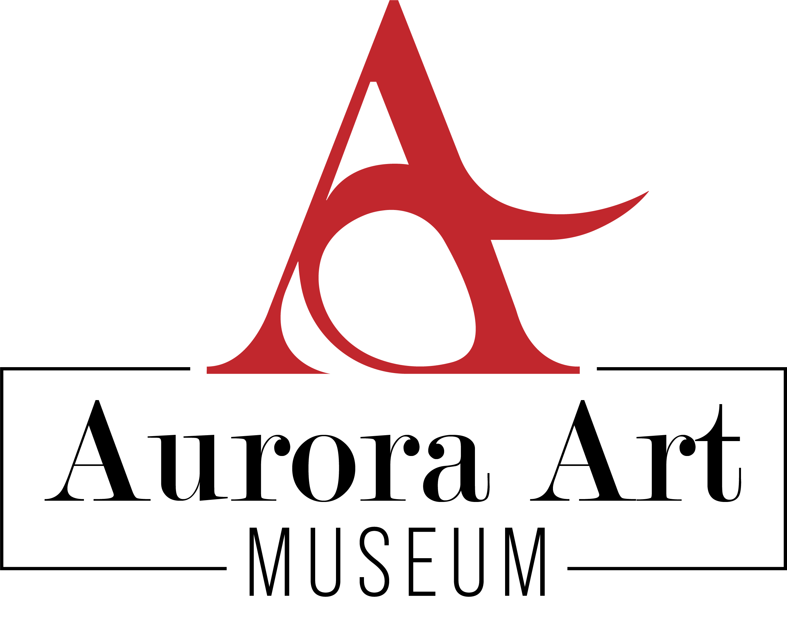

Get Tickets“Threads of Silence”
Mina Okada (Japanese, b. 1972)
Textile installation, 2010 Woven from indigo-dyed fabric strips, this large-scale hanging piece explores the absence of sound and communication. The shifting folds of fabric create shadow patterns that change with the gallery’s lighting, echoing the museum’s thematic interest in perception.